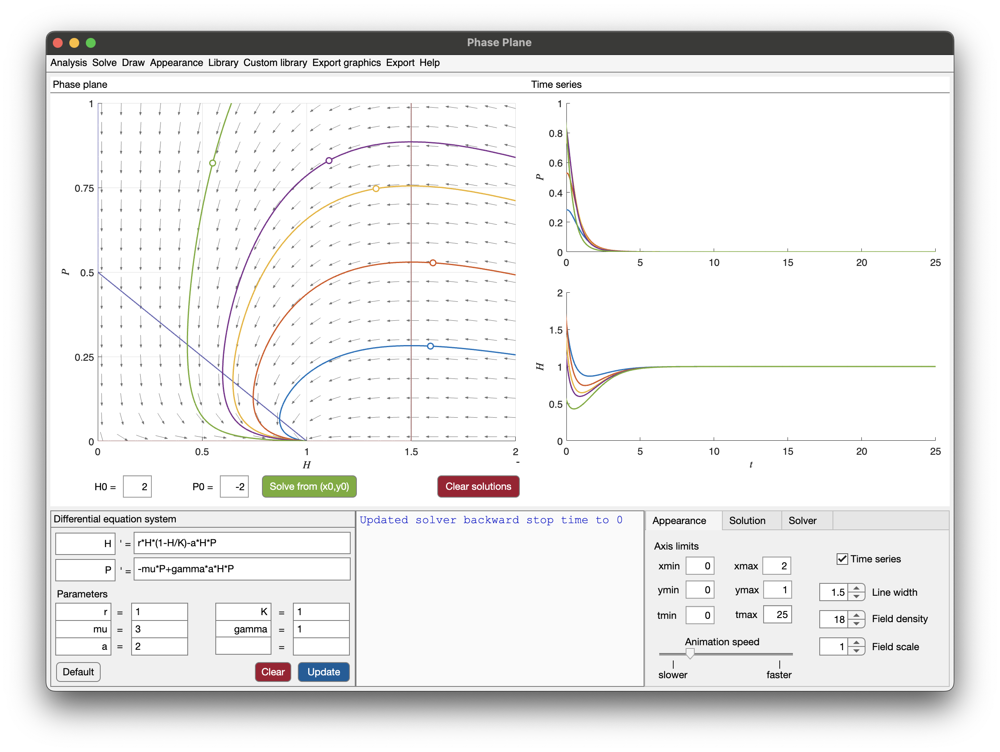
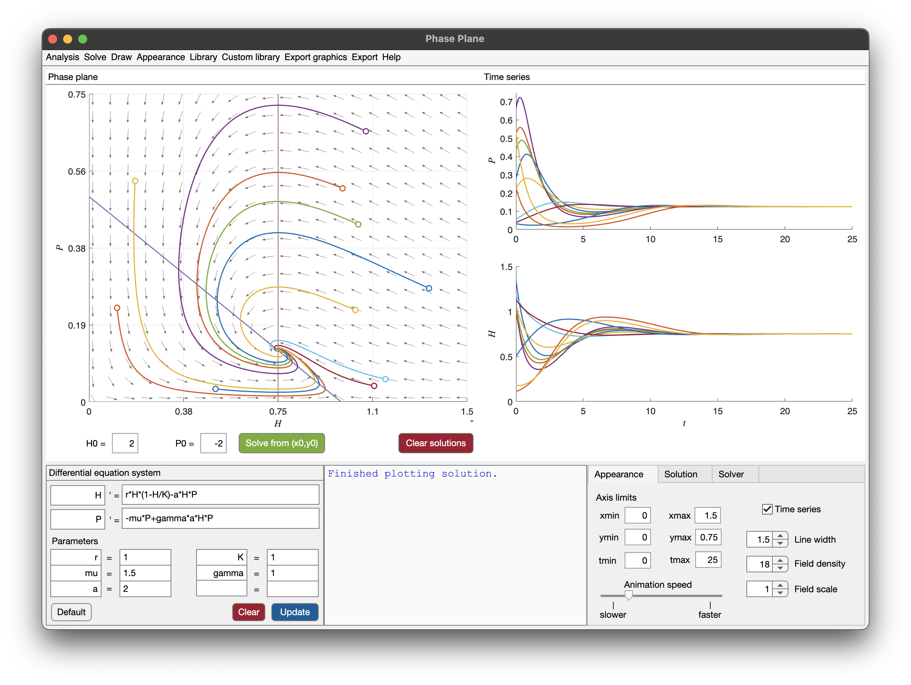

6 Gause type models
This lecture is based on (Iannelli and Pugliese 2014, vol. 79, secs. 6.2–6.4)
6.1 Gause type models
The Lotka-Volterra model is powerful, is spite of its simplicity. However, the model fails to predict many situations observed in experiments, such as those performed on bacteria by G.F. Gause in 1930s. He observed that with preys (Paramecium) and predators (Didinium) in the same test tube, first predators killed all preys, and then predators starved to death. No oscillations. This is never predicted by Lotka-Volterra original model. On the other hand, when he artificially introduced an immigration of preys into the tube, oscillations were present. Thus, stable oscillations may result from spatial structure of a population (metapopulation).
Here we focus on an alternative scenario, where oscillations may arise from nonlinear trophic interaction, such as more complex growth rates for the preys, or more complex predation types.
The most general form for a prey-predator model, called of Gause type, is as follows: \[ \left\{\begin{aligned} H' &= r(H)H - \pi(H)P, \\ P' &= -\mu P + \omega(H)P. \end{aligned}\right. \]
We already analyzed \(r(H)\), the growth rate, and \(\pi(H)\), the functional response. The function \(\omega(H)\) is the numerical response, that is the number of new predators produced in a unit time by a single predator. Usually, it is an increasing function of \(\pi(H)\), so \(\omega'(H)\ge 0\) and \(\lim_{H\to\infty}\omega(H) > \mu\) (with a lot of preys, predators survive.) An example is \(\omega(H) = \gamma \pi(H)\).
6.2 Lotka-Volterra model with logistic growth
We start from the simplest modification: \[ \left\{\begin{aligned} H' &= r H (1-H/K) - a H P, \\ P' &= -\mu P + \gamma a H P. \end{aligned}\right. \]
Here, preys grow according to the logistic equation, but predation is only linear.
6.2.1 Well-posedness
Before moving into equilibria and phase portrait, we should check the well-posedness. The right hand side is polynomial, thus local well-posedness applies. It is also possible to show that trajectories are bounded, since the triangular region \(\mathcal{T}\) formed by the axes and the line \(P = m(q-H)\), with \(q, m\) sufficiently large, is trapping the orbits.
The axes are both orbits, so they act as barriers. The diagonal side of \(\mathcal{T}\) comes from the observation that for large \(H\) and \(P\), we have \(H' < 0\) and \(P'<0\). The actual computation is \[ \begin{split} 0 > (H',P')\cdot(m,1) &= mH' + P' \\ &= mrH - mr \frac{H^2}{K} -\mu P + a(\gamma-m) HP \\ &= mr\Bigl(1-\frac{q}{K}\Bigr)H + m\frac{r}{K}(q-H)H -\mu P + a(\gamma-m) HP \\ &= mr\Bigl(1-\frac{q}{K}\Bigr)H + \frac{r}{K}HP -\mu P + a(\gamma-m) HP \\ &= mr\Bigl(1-\frac{q}{K}\Bigr)H-\mu P + \Bigl( a(\gamma-m) + \frac{r}{K} \Bigr) HP. \end{split} \]
Since \(H,P>0\), all coefficient must be negative so that the function is always negative. Thus we require: \[ \begin{aligned} a(\gamma - m) + \frac{r}{K} &< 0 &\Rightarrow&& m > \frac{r}{aK} + \gamma, \\ 1 - \frac{q}{K} &< 0 &\Rightarrow&& q > K. \\ \end{aligned} \]
6.2.2 Equilibria
As usual, we have the extinction equilibrium \(E_0 = (0,0)\). Additionally, we have \(E_K = (K,0)\), called exclusion state, and \(E^* = (H^*,P^*)\), the coexistence equilibrium. The last solves the equation: \[ \left\{\begin{aligned} 0 &= r \Bigl(1-\frac{H^*}{K}\Bigr) - a P^*, &\Rightarrow P^* &= \frac{r}{a}\Bigl(1-\frac{H^*}{K}\Bigr), \\ 0 &= -\mu + \gamma a H^*, &\Rightarrow H^* &= \frac{\mu}{\gamma a}. \end{aligned}\right. \]
Note that \(P^*\) can be negative, if \[ 1 - \frac{H^*}{K} < 0, \quad\Rightarrow\quad H^* = \frac{\mu}{\gamma a} > K. \]
Thus, we have 2 situations:
- \(H^* > K\): we only have 2 equilibria, \(E_0\) and \(E_K\);
- \(H^* < K\): we additionally have \(E^*\).
The stability follows from the Jacobian: \[ J(H,P) = \begin{pmatrix} r - 2rH/K - aP & -aH \\ \gamma a P & -\mu + \gamma a H \end{pmatrix}. \]
We have: \[ \begin{aligned} J(0,0) &= \begin{pmatrix} r & 0 \\ 0 & -\mu \end{pmatrix}, \\ J(K,0) &= \begin{pmatrix} -r & -aK \\ 0 & -\mu + \gamma a K \end{pmatrix}, \\ J(H^*,P^*) &= \begin{pmatrix} - rH^*/K & -aH^* \\ \gamma a P^* & 0 \end{pmatrix}. \end{aligned} \]
Thus:
- \(E_0\) is always a saddle;
- \(E_K\) is asymptotically stable when \(H^* > K\), otherwise is a saddle, as we can see from the eigenvalues on the diagonal;
- \(E^*\), when there exists, is asymptotically stable. In fact, \(\det J(H^*,P^*) = \gamma a^2 H^* P^* > 0\) and \(\operatorname{tr} J(H^*,P^*) = -r H^* / K < 0\).
In conclusion, we have 2 cases: \(H^* > K\) and \(H^* < K\).
6.2.3 Phase portrait: the case \(H^* > K\)
We have 3 regions of the positive quadrant, as depicted below:

On the right of \(H = H^*\), orbits always flow to the left, since \(H'<0\). Thus, starting from there, we enter into the region between \(H=H^*\) and \(P=\frac{r}{a}(1-\frac{H}{K})\). Again, orbits either flow into the triangle, or approach the only available equilibrium \(E_K\). Finally, within the triangle, orbits flow towards \(E_K\). We conclude that \(E_K\) is globally stable.
If \(K \le H^*\), then for any \((H(0),P(0))>0\) we have \[ \lim_{t\to\infty}(H,P) = (K,0). \]
The predators go to extinction, while preys survive.
6.2.4 Phase portrait: the case \(H^* < K\)
We have 4 regions, as follows:

First, we show that we cannot have a limit cycle. Using Dulac’s criterium with factor \(1/(HP)\) we have: \[ \operatorname{div}\Bigl(\frac{\mathbf{f}(H,P)}{HP}\Bigr) = \frac{\partial}{\partial H}\Bigl( \frac{r(1-H/K)-aP}{P} \Bigr) + \frac{\partial}{\partial P}\Bigl( \frac{-\mu + \gamma a H}{H} \Bigr) = -\frac{r}{KP} < 0. \]
Since \(\mathcal{T}\) is a trapping region with no limit cycles, the \(\omega\)-limit set is an equilibrium point. The only stable one is \(E^*\), a spiral, thus all trajectories should converge there.
An alternative proof is based on the Lyapunov function \[ V(H,P) = \gamma(H - H^*\log H) + (P - P^*\log P). \]
We recall that a Lyapunov function has the property that is positive, zero at the equilibrium, and (semi-)negative definite, then the equilibrium is stable. This is the case, since: \[ \begin{aligned} \frac{\mathrm{d}}{\mathrm{d}t}V\bigl(H(t),P(t)\bigr) &= \gamma\Bigl(1 - \frac{H^*}{H}\Bigr) H \Bigl( r\Bigl(1-\frac{H}{K}\Bigr) - aP \Bigr) + \Bigl(1 - \frac{P^*}{P}\Bigr) P(-\mu + \gamma a H) \\ &= \gamma a (H - H^* ) \Bigl( \frac{r}{a}\Bigl(1-\frac{H}{K}\Bigr) - P \Bigr) + \gamma a (P - P^*)\Bigl( -\frac{\mu}{\gamma a} + H \Bigr) \\ &= \gamma a (H - H^* ) \Bigl( P^* - \frac{r}{a}\frac{H-H^*}{K} - P \Bigr) + \gamma a (P - P^*)( H - H^* ) \\ &= - \frac{r\gamma}{K}(H-H^*)^2 \le 0. \end{aligned} \]
Thus, orbits converge towards the line \(H=H^*\). But along this line we only have the equilibrium \(E^*\), thus \(E^*\) attracts all orbits.
We see here that the Lotka-Volterra system is not structurally stable, because a perturbation of it (adding the logistic term, which as little effect for \(H\) small) prevents the existence of a limit cycle.